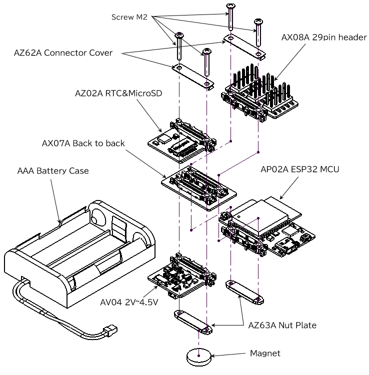

Wi-Fi タッチセンサ
人が近づいたら音を鳴らそう ※修正お願いします。
概要
工場出荷時に、ESP32 MCUリーフにArduinoのスケッチが書き込まれているので、スマートフォンやパソコンのWi-Fiを使ってタッチセンサの値を送信して、表示がされます。
使用するリーフ
以下のリーフを使用します
| Type | Name | Q’ty |
|---|---|---|
| AP02A | ESP32 MCU | 1 |
| AV04A | 2V~4.5V | 1 |
| AX07A | Back to back | 1 |
| AX08A | 29pin header | 1 |
| Screw M2×？mm | 4 |
リーフの組み立て
下図のようにリーフを組み立てましょう。

スケッチの書き込み
- ESP32 MCUをArduino IDEで使用するには、Arduino core for the ESP32 のインストールが必要です。詳しくは、こちら。
- Arduino IDEで、以下のスケッチをマイコンボードに書き込んでください。
//=====================================================================
// Leafony Platform sample sketch
// Platform : ESP32
// Processor : ESP32-WROOM-32
// Application : ESP32 Touch Sensor
//
// Leaf configuration
// (1) AP02A ESP MCU
// (2) AX08A 29pin header
//
// (c) 2019 Trillion-Node Study Group
// Released under the MIT license
// https://opensource.org/licenses/MIT
//
// Rev.00 2019/11/21 First release
//=====================================================================
#include <WiFi.h> // ESP32用WiFiライブラリ
#include <WiFiClient.h>
#include <WiFiAP.h>
//----------------------------------------------
// Wi-Fi Set these to your desired credentials.
//----------------------------------------------
const char *ssid = "Leafony_ESP32-AP";
const char *password = "password";
WiFiServer server(80);
#define TIMEOUT 20000 // タイムアウト 20秒
int update=1; // ブラウザのページ更新間隔(秒)初期値
//----------------------------------------------
// Touch
//----------------------------------------------
int threshold = 20; // Touch 検出閾値
// bool touch1detected = false;
// bool touch2detected = false;
// bool touch3detected = false;
// bool touch4detected = false;
// bool touch5detected = false;
// bool touch6detected = false;
//----------------------------------------------
// Touch 割り込み
//----------------------------------------------
// ------ T0 ------
// void gotTouch1(){
// touch1detected = true;
// }
// ------ T3 ------
// void gotTouch2(){
// touch2detected = true;
// }
// ------ T4 ------
// void gotTouch3(){
// touch3detected = true;
// }
// ------ T5 ------
// void gotTouch4(){
// touch4detected = true;
// }
// ------ T6 ------
// void gotTouch5(){
// touch5detected = true;
// }
// ------ T7 ------
// void gotTouch6(){
// touch6detected = true;
// }
//====================================================================
void setup(){
Serial.begin(115200); // デバッグシリアル出力開始
Serial.println("Wi-Fi & Touch Sensor Test"); // シリアル出力表示
WiFi.softAP(ssid, password);
IPAddress myIP = WiFi.softAPIP();
Serial.print("AP IP address: ");
Serial.println(myIP);
server.begin(); // サーバ起動
delay(1000); // Wait
Serial.println("Server started");
//----------------------------------------------
// Touch 割り込み設定
//----------------------------------------------
// touchAttachInterrupt(T0, gotTouch1, threshold); // D2/22pin
// touchAttachInterrupt(T3, gotTouch2, threshold); // D7/9pin
// touchAttachInterrupt(T4, gotTouch3, threshold); // D5/28pin
// touchAttachInterrupt(T5, gotTouch4, threshold); // D4/26pin
// touchAttachInterrupt(T6, gotTouch5, threshold); // D6/7pin
// touchAttachInterrupt(T7, gotTouch6, threshold); // D3/24pin
}
//====================================================================
void loop(){
delay(1000); // Wait：これが短いと”このページは動作していません"が頻発する
WiFiClient client = server.available(); // 接続中のクライアントからデータを受信
char read_data; // 文字変数を定義
char s[65]; // 文字列変数を定義 65バイト64文字
byte data[32]; // 画像転送用の一時保存変数
int len=0; // 文字列等の長さカウント用
int t_wait=0; // 更新時間カウント用
int i,f_size;
delay(500); // Wait：これが短いと”このページは動作していません"が頻発する
client = server.available(); // 接続されたクライアントを生成
if(!client)return; // loop()の先頭に戻る
// Serial.println("Connected"); // シリアル出力表示
while(client.connected()){ // 当該クライアントの接続状態を確認
if(client.available()){ // クライアントからのデータを確認
t_wait=0; // 待ち時間変数をリセット
read_data=client.read(); // データを文字変数read_dataに代入
if(read_data=='\n'){ // 改行を検出した時
if(len>5 && strncmp(s,"GET /",5)==0) break;
len=0; // 文字列長を0に
}else if(read_data!='\r' && read_data!='\0'){
s[len]=read_data; // 文字列変数に文字read_dataを追加
len++; // 変数lenに1を加算
s[len]='\0'; // 文字列を終端
if(len>=64) len=63; // 文字列変数の上限
}
}
t_wait++; // 変数t_waitの値を1増加させる
if(t_wait>TIMEOUT) break; else delay(1); // TIMEOUTに到達したらwhileを抜ける
}
delay(1); // クライアント側の応答待ち時間
if(!client.connected()||len<6) return; // 切断された場合はloop()の先頭へ
// Serial.println(s); // 受信した命令をシリアル出力表示
if(strncmp(s,"GET / ",6)==0){ // コンテンツ取得命令時
//----------------------------------------------
// Web 表示
//----------------------------------------------
html(client,update,WiFi.softAPIP()); // コンテンツ表示
client.flush(); // ESP32用 ERR_CONNECTION_RESET対策
// client.stop(); // クライアントの切断
return; // 処理の終了・loop()の先頭へ
}
//----------------------------------------------
// 更新時間の設定
//----------------------------------------------
if(strncmp(s,"GET /?INT=",10)==0){ // 更新時間の設定命令を受けた時
update = atoi(&s[10]); // 受信値を変数updateに代入
}
//----------------------------------------------
// コマンド送信
//----------------------------------------------
for(i=6;i<strlen(s);i++) if(s[i]==' '||s[i]=='+') s[i]='\0';
htmlMesg(client,&s[6],WiFi.softAPIP()); // メッセージ表示
client.flush(); // ESP32用 ERR_CONNECTION_RESET対策
// client.stop(); // クライアント切断
Serial.println("Sent HTML"); // シリアル出力表示
}
* ESP32_AP_Touch.inoと同じフォルダに保存してください。自動的に読み込まれます
//=====================================================================
// Leafony Platform sample sketch
// Application : html
//
// (c) 2019 Trillion-Node Study Group
// Released under the MIT license
// https://opensource.org/licenses/MIT
//
// Rev.00 2019/11/07 First release
//=====================================================================
//====================================================================
// Web表示
//====================================================================
void html(WiFiClient &client, int update, uint32_t ip){
char s[65],s_ip[16];
uint16_t touchData;
uint16_t touchTemp;
sprintf(s_ip,"%d.%d.%d.%d",
ip & 255,
ip>>8 & 255,
ip>>16 & 255,
ip>>24
);
client.println("HTTP/1.1 200 OK"); // HTTP OKを応答
client.println("Content-Type: text/html"); // HTMLコンテンツ
client.println("Connection: close"); // 応答終了後にセッションを閉じる
client.println();
client.println("<html>");
client.println("<head><title>Test Page</title>");
client.println("<meta http-equiv=\"Content-type\" content=\"text/html; charset=UTF-8\">");
if(update){
client.print("<meta http-equiv=\"refresh\" content=\"");
client.print(update);
client.print(";URL=http://");
client.print(s_ip);
client.println("/\">");
}
client.println("</head>");
client.println("<body>");
client.println("<h3>Wi-Fi & Touch Sensor Test</h3>");
// ------ T6 ------
touchData=touchRead(T6);
client.print("F7 /D6:");
for (touchTemp=0; touchTemp<=touchData/5; touchTemp++){
client.print("*");
}
client.print(":"+String(touchData));
// if(touch5detected){
if(touchData<=threshold){
// touch5detected = false;
Serial.println("T6/D6/ 7pin :"+String(touchData)+" :Touch detected");
client.println(" :Touch detected");
}
client.println("<br>");
// ------ T3 ------
touchData=touchRead(T3);
client.print("F9 /D7:");
for (touchTemp=0; touchTemp<=touchData/5; touchTemp++){
client.print("*");
}
client.print(":"+String(touchData));
// if(touch2detected){
if(touchData<=threshold){
// touch2detected = false;
Serial.println("T3/D7/ 9pin :"+String(touchData)+" :Touch detected");
client.println(" :Touch detected");
}
client.println("<br>");
// ------ T0 ------
touchData=touchRead(T0);
client.print("F22/D2:");
for (touchTemp=0; touchTemp<=touchData/5; touchTemp++){
client.print("*");
}
client.print(":"+String(touchData));
// if(touch1detected){
if(touchData<=threshold){
// touch1detected = false;
Serial.println("T0/D2/22pin :"+String(touchData)+" :Touch detected");
client.println(" :Touch detected");
}
client.println("<br>");
/*
// ------ T7 ------
touchData=touchRead(T7);
client.print("F24/D3:");
for (touchTemp=0; touchTemp<=touchData/5; touchTemp++){
client.print("*");
}
client.print(":"+String(touchData));
// if(touch6detected){
if(touchData<=threshold){
// touch6detected = false;
Serial.println("T7/D3/24pin :"+String(touchData)+" :Touch detected");
client.println(" :Touch detected");
}
client.print("<br>");
*/
// ------ T5 ------
touchData=touchRead(T5);
client.print("F26/D4:");
for (touchTemp=0; touchTemp<=touchData/5; touchTemp++){
client.print("*");
}
client.print(":"+String(touchData));
// if(touch4detected){
if(touchData<=threshold){
// touch4detected = false;
Serial.println("T5/D4/26pin :"+String(touchData)+" :Touch detected");
client.println(" :Touch detected");
}
client.println("<br>");
// ------ T4 ------
touchData=touchRead(T4);
client.print("F28/D5:");
for (touchTemp=0; touchTemp<=touchData/5; touchTemp++){
client.print("*");
}
client.print(":"+String(touchData));
// if(touch3detected){
if(touchData<=threshold){
// touch3detected = false;
Serial.println("T4/D5/28pin :"+String(touchData)+" :Touch detected");
client.println(" :Touch detected");
}
client.println("<br>");
client.print("更新間隔 = ");
client.print(update);
client.println(" 秒</p>");
client.println("<hr>");
// client.println("<h3>HTTP GET</h3>");
client.print("<p>http://");
client.print(s_ip);
sprintf(s,"<form method=\"GET\" action=\"http://%s/\">",s_ip);
client.println(s);
client.println("自動更新:<input type=\"submit\" name=\"INT\" value=\"0 停止\">");
client.println("<input type=\"submit\" name=\"INT\" value=\"1 秒\">");
// client.println("<input type=\"submit\" name=\"INT\" value=\"2 秒\">");
// client.println("<input type=\"submit\" name=\"INT\" value=\"5 秒\">");
// client.println("<input type=\"submit\" name=\"INT\" value=\"10 秒\">");
// client.println(" <input type=\"submit\" name=\"RESET\" value=\"リセット\"><br><br>");
client.println("</form>");
client.println("</body>");
client.println("</html>");
}
//====================================================================
// コマンド送信
//====================================================================
void htmlMesg(WiFiClient &client, char *txt, uint32_t ip){
char s_ip[16];
sprintf(s_ip,"%d.%d.%d.%d",
ip & 255,
ip>>8 & 255,
ip>>16 & 255,
ip>>24
);
client.println("HTTP/1.1 200 OK"); // HTTP OKを応答
client.println("Content-Type: text/html"); // HTMLコンテンツ
client.println("Connection: close"); // 応答終了後にセッションを閉じる
client.println();
client.println("<html>");
client.println("<head><title>Test Page2</title>");
client.println("<meta http-equiv=\"Content-type\" content=\"text/html; charset=UTF-8\">");
client.print("<meta http-equiv=\"refresh\" content=\"3;URL=http://");
client.print(s_ip);
client.println("/\">");
client.print("<p>");
client.print(txt);
client.println("</p>");
client.println("</body>");
client.println("</html>");
}
- Arduino IDE 1.8.9で動作を確認しています。書き込みエラーが発生したら、IDEのバージョンを確認してください
表示のやり方
表示のやり方は、クイックスタートに記載していますので、ご参照願います。
最終更新 April 30, 2020: 体裁を整えた (88443c5)